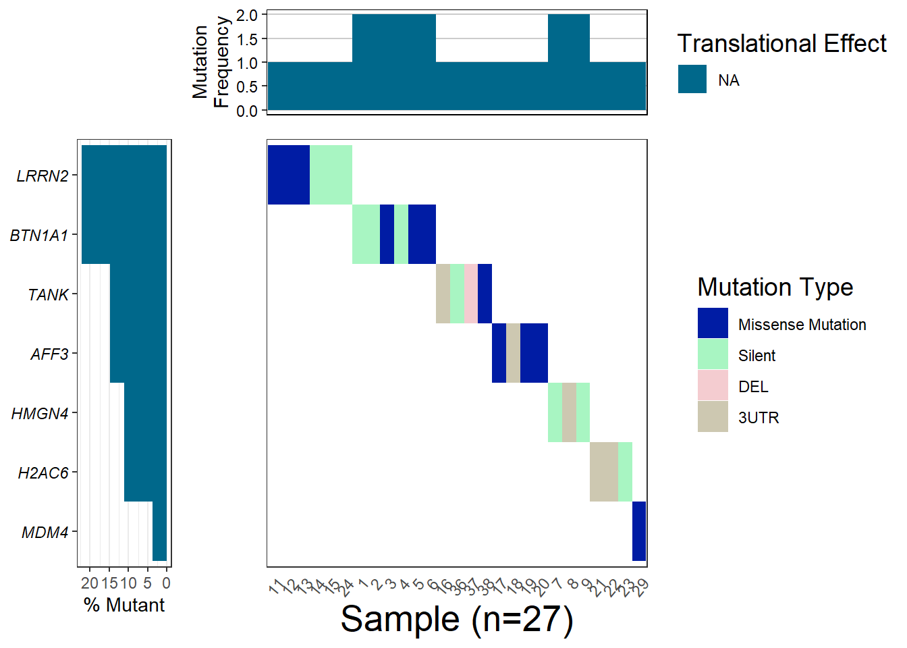

Chapter 10 GenVisR
10.1 Introduction to dataset
The scientists conducted a genome-wide association study and found mutations in specific regions of the genome that correlate with educational attainment. Found mutations are responsible for only two percent of the variation in the level of education and cognitive ability, but include “promising” for further research single-nucleotide polymorphisms (single-nucleotide polymorphisms, SNPs). Specifically, three independent mutations (rs9320913, rs11584700, rs4851266) are responsible for approximately 1 additional month of learning each.(Rietveld et al., 2013).
Studies were performed on data from Utah residents with Northern and Western European ancestry ((Rietveld et al., 2013)).
Daset comes form Supplementary Materials for GWAS of 126,559 Individuals Identifies Genetic Variants Associated with Educational Attainment https://www.science.org/doi/abs/10.1126/science.1235488 (Appendix)
The normal functioning of each cell depends on thousands of proteins that need to be to be in the right place at the right time. Sometimes mutations in genes prevent one or one or more proteins from working properly. By making a change in a gene, the mutation thereby changes the instructions for synthesizing the protein so that the protein no longer functions properly or is not synthesized at all.The sequence of a gene in DNA can be altered in several ways. Mutations in genes have different effects on health and depend on which genes they occurred in and whether the function of these proteins is altered. This type of Missense mutation is caused by the replacement of one DNA base for another (e.g., replacing T for C, or G for A), resulting in the substitution of one amino acid for another in the protein encoded by the gene. Here is one example of missene mutation from the study by Flint and Munafò(Rietveld et al., 2013).
The mutation caused by the substitution of nucleotide A for G results in the substitution of amino acid Aspartic acid for Glutamic acid.This in turn changes the properties of the protein. As Whole-Genom scientists have shown the mutation rs1056667 is associated with cognitive performance (Erikson et al., 2016) Gene BTN1A1 is located on chromosome 6(Gene, n.d.).Some studies have shown that this chromosome is important in the development of normal intelligence(Chromosome 6 Ring - Symptoms, Causes, Treatment | NORD, n.d.).
Figure 10.1: Figure 2. Gene map BTN1A1
10.2 Implementation genVizR
Genomic Visualization and Interpretations Introduction to genVizR
genVizR is a package to interpret and visualize data received from NGS sequencing.There are many tools available for the analysis and visualization of these data. In this module we will focus on 3 functions : waterfall, genCov, and cnSpec. For the last module another dataset is used. The dataset for the spectrum plot comes from the GDC data portal, https://portal.gdc.cancer.gov/analysis_page?app=Downloads, file with name MATZO_p_TCGAb40_SNP_1N_GenomeWideSNP_6_E09_667812.grch38.seg.v2.txt.
Waterfall plots
The waterfall() function from the genVizR package displays mutation in a heatmap-like structure with rows and columns denotating genes and samples.The function creates a plot of the mutational landscape from original data. (Waterfall, n.d.)
First of all, we need to load the genVizR library from bioconductor. We also need to load the mutation data. In the original dataset, only the gene name, mutation and position are present. We need to add some additional information from the Ensemble database, such as chromosome coordinates and gene annotation and to join this information to dataset.Output of this function is a heatmap with number (%) of SNP mutations per genes. In this dataset we encure Missense, Silent, Deletion and 3’-UTR mutation
Install required libraries
if (!requireNamespace("BiocManager", quietly = TRUE))
install.packages("BiocManager")
BiocManager::install("GenVisR")Data preproccesing. First we save all gene names from article to the list.
list_gen_names <- c("AFF3","BTN1A1", "H2AC6", "HMGN4", "MDM4", "LRRN2", "TANK" )
list_ensemble <- c("ENSG00000144218", "ENSG00000124557","ENSG00000180573", "ENSG00000182952", "ENSG00000198625","ENSG00000170382", "ENSG00000136560")Then we need to retrieve genomic coordinates and annotations for the further analyses. This is possible with biomaRt Bioconductor library
ensembl <- useMart("ensembl")
ensembl <- useDataset("hsapiens_gene_ensembl",mart=ensembl)
object_results2 <- getBM(attributes=c('ensembl_gene_id','chromosome_name', 'start_position', 'end_position','gene_biotype','hgnc_symbol'),
filters='hgnc_symbol',
values=list_gen_names,
mart=ensembl) Export Ensemble results to csv file.
| ensembl_gene_id | chromosome_name | start_position | end_position | gene_biotype | hgnc_symbol |
|---|---|---|---|---|---|
| ENSG00000144218 | 2 | 99545419 | 100192428 | protein_coding | AFF3 |
| ENSG00000292177 | HSCHR6_1_CTG1 | 46483 | 56605 | protein_coding | BTN1A1 |
| ENSG00000124557 | 6 | 26500303 | 26510425 | protein_coding | BTN1A1 |
| ENSG00000180573 | 6 | 26124145 | 26139116 | protein_coding | H2AC6 |
| ENSG00000292175 | HSCHR6_1_CTG1 | 84546 | 93113 | protein_coding | HMGN4 |
| ENSG00000182952 | 6 | 26538366 | 26546933 | protein_coding | HMGN4 |
| ENSG00000170382 | 1 | 204617170 | 204685738 | protein_coding | LRRN2 |
| ENSG00000198625 | 1 | 204516379 | 204558120 | protein_coding | MDM4 |
| ENSG00000136560 | 2 | 161136908 | 161236230 | protein_coding | TANK |
Join dataset export from biomart with list of genes/mutations.
## ensembl_gene_id chromosome_name start_position end_position gene_biotype
## 1 ENSG00000144218 2 99545419 100192428 protein_coding
## 2 ENSG00000292177 HSCHR6_1_CTG1 46483 56605 protein_coding
## 3 ENSG00000124557 6 26500303 26510425 protein_coding
## 4 ENSG00000180573 6 26124145 26139116 protein_coding
## 5 ENSG00000292175 HSCHR6_1_CTG1 84546 93113 protein_coding
## 6 ENSG00000182952 6 26538366 26546933 protein_coding
## hgnc_symbol
## 1 AFF3
## 2 BTN1A1
## 3 BTN1A1
## 4 H2AC6
## 5 HMGN4
## 6 HMGN4Make column names fit to join the ensemble dataset
names(data_set_appendix)[names(data_set_appendix) == 'Hugo_Symbol'] <- 'hgnc_symbol'
names(data_set_appendix)[names(data_set_appendix) == 'X'] <- 'sample'## hgnc_symbol sample Variant_Classification Position ensembl_gene_id
## 1 AFF3 18 3UTR 99545644 ENSG00000144218
## 2 AFF3 19 Missense_Mutation 99545817 ENSG00000144218
## 3 AFF3 20 Missense_Mutation 99545812 ENSG00000144218
## 4 AFF3 17 Missense_Mutation 99545531 ENSG00000144218
## 5 BTN1A1 3 Missense_Mutation 26505362 ENSG00000292177
## 6 BTN1A1 3 Missense_Mutation 26505362 ENSG00000124557
## chromosome_name start_position end_position gene_biotype
## 1 2 99545419 100192428 protein_coding
## 2 2 99545419 100192428 protein_coding
## 3 2 99545419 100192428 protein_coding
## 4 2 99545419 100192428 protein_coding
## 5 HSCHR6_1_CTG1 46483 56605 protein_coding
## 6 6 26500303 26510425 protein_codingSNP mutation in the genome, such as single nucleotide variants, insertions, or deletions, play a significant role in the development of genetic diseases. Identifying and summarizing these variants is frequently the initial stage in forming hypotheses about how these events contribute to the development and advancement of diseases. The purpose of the waterfall function is to effectively consolidate small variant (SNVs/indels) data at a cohort level. It is usefull for gaining a comprehensive understanding of the types of variations seen in a group. Additionally, waterfall plots provide insight into the burden of mutations, genes that are frequently mutated, the mutual exclusivity or co-occurrence of genes, and the correlation between variants and clinical information. (Waterfall, n.d.)
waterfall: function implementation on the chosen dataset
myHierarchy <- data.table("mutation"=c("Missense_Mutation", "Silent", "3’UTR", "DEL"), color=c("#001ca4", "#A8F5C2",
"#D69C4E", "#F4CCD0" ) )
colnames(full_join)## [1] "hgnc_symbol" "sample" "Variant_Classification"
## [4] "Position" "ensembl_gene_id" "chromosome_name"
## [7] "start_position" "end_position" "gene_biotype"names(full_join)[names(full_join) == 'hgnc_symbol'] <- 'gene'
names(full_join)[names(full_join) == 'Variant_Classification'] <- 'mutation'
names(full_join)[names(full_join) == 'X'] <- 'sample'
full_join <- full_join %>% janitor :: clean_names()
plotGenes=c("PIK3CA", "TP53", "USH2A", "MLL3", "BRCA1")
plotData2 <- Waterfall(full_join, mutationHierarchy = myHierarchy)
cnSpec
Copy number spectrum plots generates sequencing data is the the determination of copy number gains and losses. The cnSpec() function, short for “copy number spectrum”, from the GenVisR package provides a view of copy number calls for a cohort of cases. Function cnSpec() requires parameters are a data frame with column names “chromosome”, “start”, “end”, “segmean”, “sample” and a reference assembly to the parameter genome.The data we will be working is gedownload from GDC database https://portal.gdc.cancer.gov/analysis_page?app=Downloads The output of this program consists of a file containing segmented copy number calls. The function gives a visualization of the sequencing dataset by sample by chromosome. Chromosomes are indicated in columns, samples in rows. Red color means too many copies of this gene, which means that these genes are carcinogenic.
file_ngs_part1 <- "data_raw/genViz/MATZO_p_TCGAb40_SNP_1N_GenomeWideSNP_6_E09_667812.grch38.seg.v1.txt"
file_ngs_part2 <- "data_raw/genViz/MATZO_p_TCGAb40_SNP_1N_GenomeWideSNP_6_E09_667812.grch38.seg.v2.txt"
ngs_v1 <- readr::read_delim(file_ngs_part1, delim = "\t")
ngs_v2 <- readr::read_delim(file_ngs_part2, delim = "\t")## # A tibble: 6 × 6
## GDC_Aliquot Chromosome Start End Num_Probes Segment_Mean
## <chr> <chr> <dbl> <dbl> <dbl> <dbl>
## 1 3573fb47-be73-4d7c-a9c9-b0ba… 1 6.29e4 9.86e4 13 0.632
## 2 3573fb47-be73-4d7c-a9c9-b0ba… 1 2.59e5 7.93e5 13 0.152
## 3 3573fb47-be73-4d7c-a9c9-b0ba… 1 8.05e5 3.30e6 714 0.338
## 4 3573fb47-be73-4d7c-a9c9-b0ba… 1 3.30e6 5.05e6 1321 0.0421
## 5 3573fb47-be73-4d7c-a9c9-b0ba… 1 5.05e6 5.07e6 12 0.664
## 6 3573fb47-be73-4d7c-a9c9-b0ba… 1 5.08e6 5.19e6 87 0.0681colnames(ngsv1.2) <- c("sample", "chromosome", "start", "end", "probes", "segmean")
ngsv1.2 <- mutate(ngsv1.2, sample=str_sub(sample, start=32, end=36))genomeBoundaries <- aggregate(chromEnd ~ chrom, data=cytoGeno[cytoGeno$genome=="hg38",], max)
genomeBoundaries$chromStart <- 0
colnames(genomeBoundaries) <- c("chromosome", "end", "start")cnSpec(ngsv1.2, genome="hg38", CN_Loss_colour = "#add8e6",
CN_Gain_colour = "#A30000", CNscale="relative", y=genomeBoundaries )
Gen cov
Gencov is the function to view coverage of a specific region of the genome in the context of specific samples. This dataset contains coordinates of 2 gens, BTN1A1, BTN2A1 on the chromosome 6 and number their transcripts per coordinate.In this particular plot we can see, that BTN1A1 is more covered than BTN2A1. And we can see the region with hight and low GC content, the GC-content is higher in exons than in introns. The second segment of the plot with hight CG- content is exon. For this function we need BSgenome object. The BSgenome class is a container for storing the full genome sequences of a given organism. The coverage data for our experiment corresponds to the hg19 reference assembly. Libraries BSgenome.Hsapiens.UCSC.hg19 and TxDb.Hsapiens.UCSC.hg19.knownGene ares loaded.
library(TxDb.Hsapiens.UCSC.hg19.knownGene)
txdb <- TxDb.Hsapiens.UCSC.hg19.knownGene
library(BSgenome.Hsapiens.UCSC.hg19)
genome <- BSgenome.Hsapiens.UCSC.hg19url <- "data_raw/genViz/BTN1A1_cov_chr6.V1.txt"
covData <- read.csv(url, sep="\t", header=T)
colnames(covData) <- c("chromosome", "start", "end", "BTN1A1", "BTN2A1")
# create a function to split the data frame into lists of data frames
samples <- c("BTN1A1", "BTN2A1")a <- function(x, y){
col_names <- c("chromosome", "end", x)
y <- y[,col_names]
colnames(y) <- c("chromosome", "end", "cov")
return(y)
}
covData <- lapply(samples, a, covData)
names(covData) <- sampleschromosome <- as.character(unique(covData[[1]]$chromosome))
start <- as.numeric(min(covData[[1]]$end))
end <- as.numeric(max(covData[[1]]$end))genCov(x=covData, txdb=TxDbObject, gr=grObject, genome=genomeObject, cov_plotType="line", label_txtSize = 5)
## NULL